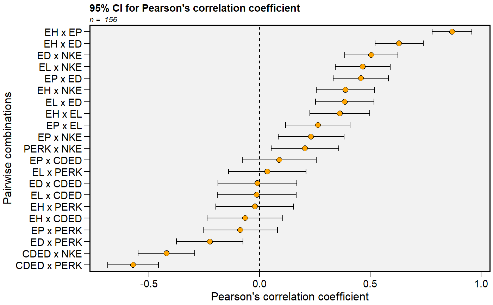
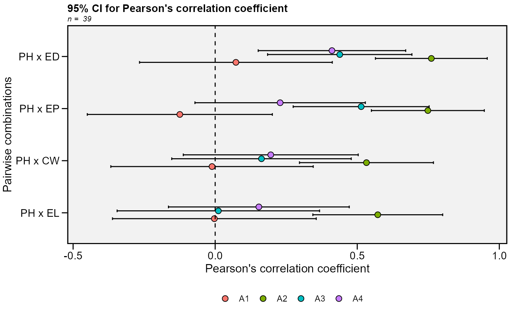

![[Stable]](figures/lifecycle-stable.svg)
This function plots the 95% confidence interval for Pearson's correlation
coefficient generated by the function corr_ci.
plot_ci( object, fill = NULL, position.fill = 0.3, x.lab = NULL, y.lab = NULL, y.lim = NULL, y.breaks = waiver(), shape = 21, col.shape = "black", fill.shape = "orange", size.shape = 2.5, width.errbar = 0.2, main = TRUE, invert.axis = TRUE, reorder = TRUE, legend.position = "bottom", plot_theme = theme_metan() )
Arguments
| object | An object generate by the function |
|---|---|
| fill | If |
| position.fill | The position of shapes and errorbar when |
| x.lab | The label of x-axis, set to 'Pairwise combinations'. New
arguments can be inserted as |
| y.lab | The label of y-axis, set to 'Pearson's correlation coefficient'
New arguments can be inserted as |
| y.lim | The range of x-axis. Default is |
| y.breaks | The breaks to be plotted in the x-axis. Default is
|
| shape | The shape point to represent the correlation coefficient.
Default is |
| col.shape | The color for the shape edge. Set to |
| fill.shape | The color to fill the shape. Set to |
| size.shape | The size for the shape point. Set to |
| width.errbar | The width for the errorbar showing the CI. |
| main | The title of the plot. Set to |
| invert.axis | Should the names of the pairwise correlation appear in the y-axis? |
| reorder | Logical argument. If |
| legend.position | The position of the legend when using |
| plot_theme | The graphical theme of the plot. Default is
|
Value
An object of class gg, ggplot.
Examples
# \donttest{ library(metan) library(dplyr) # Traits that contains "E" data_ge2 %>% select(contains('E')) %>% corr_ci() %>% plot_ci()#> # A tibble: 21 x 7 #> V1 V2 Corr n CI LL UL #> <chr> <chr> <dbl> <int> <dbl> <dbl> <dbl> #> 1 EH EP 0.870 156 0.0901 0.779 0.960 #> 2 EH EL 0.363 156 0.135 0.228 0.497 #> 3 EH ED 0.630 156 0.109 0.521 0.739 #> 4 EH CDED -0.0659 156 0.170 -0.236 0.104 #> 5 EH PERK -0.0213 156 0.176 -0.198 0.155 #> 6 EH NKE 0.388 156 0.132 0.256 0.520 #> 7 EP EL 0.263 156 0.146 0.118 0.409 #> 8 EP ED 0.458 156 0.125 0.333 0.583 #> 9 EP CDED 0.0897 156 0.167 -0.0775 0.257 #> 10 EP PERK -0.0871 156 0.167 -0.255 0.0804 #> # ... with 11 more rows# Group by environment # Traits PH, EH, EP, EL, and ED # Select only correlations with PH data_ge2 %>% corr_ci(PH, EP, EL, ED, CW, sel.var = "PH", by = ENV) %>% plot_ci(fill = ENV)#> # A tibble: 4 x 7 #> V1 V2 Corr n CI LL UL #> <chr> <chr> <dbl> <int> <dbl> <dbl> <dbl> #> 1 PH EP -0.124 39 0.326 -0.450 0.201 #> 2 PH EL -0.00287 39 0.359 -0.361 0.356 #> 3 PH ED 0.0729 39 0.339 -0.266 0.412 #> 4 PH CW -0.0111 39 0.356 -0.367 0.345 #> # A tibble: 4 x 7 #> V1 V2 Corr n CI LL UL #> <chr> <chr> <dbl> <int> <dbl> <dbl> <dbl> #> 1 PH EP 0.748 39 0.199 0.550 0.947 #> 2 PH EL 0.572 39 0.228 0.344 0.801 #> 3 PH ED 0.761 39 0.197 0.564 0.958 #> 4 PH CW 0.532 39 0.236 0.297 0.768 #> # A tibble: 4 x 7 #> V1 V2 Corr n CI LL UL #> <chr> <chr> <dbl> <int> <dbl> <dbl> <dbl> #> 1 PH EP 0.514 39 0.239 0.275 0.753 #> 2 PH EL 0.0111 39 0.356 -0.345 0.367 #> 3 PH ED 0.438 39 0.254 0.184 0.692 #> 4 PH CW 0.163 39 0.316 -0.153 0.479 #> # A tibble: 4 x 7 #> V1 V2 Corr n CI LL UL #> <chr> <chr> <dbl> <int> <dbl> <dbl> <dbl> #> 1 PH EP 0.229 39 0.300 -0.0712 0.528 #> 2 PH EL 0.154 39 0.318 -0.164 0.472 #> 3 PH ED 0.411 39 0.260 0.151 0.671 #> 4 PH CW 0.196 39 0.308 -0.112 0.503# }